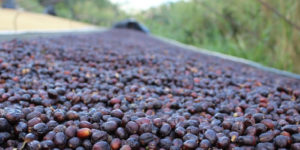

Mezcla de granos de café especialidad, origen Tarrazú, 100% Arábica de las variedades Caturra y Catuai, cultivado y procesado en la finca el Bautismo, en el cantón de León Cortés Castro a una altitud de 1800 m.s.n.m sobre el territorio costarricense.
ELa cereza madura con su piel es secada en camas africanas al sol, manteniendo gran cantidad de sacarosa y ácidos, lo cual crea un sabor exótico y distinguible.

Su acidez fina, cuerpo ligero y notas frutales, brindan una experiencia postgusto corto y agradable, lo hacen único y exquisito al paladar.
Para su preparación: Utilizar 6g de café por cada taza de agua.
Presentaciones de: 300g 500g 1000g
-Fin de la página-